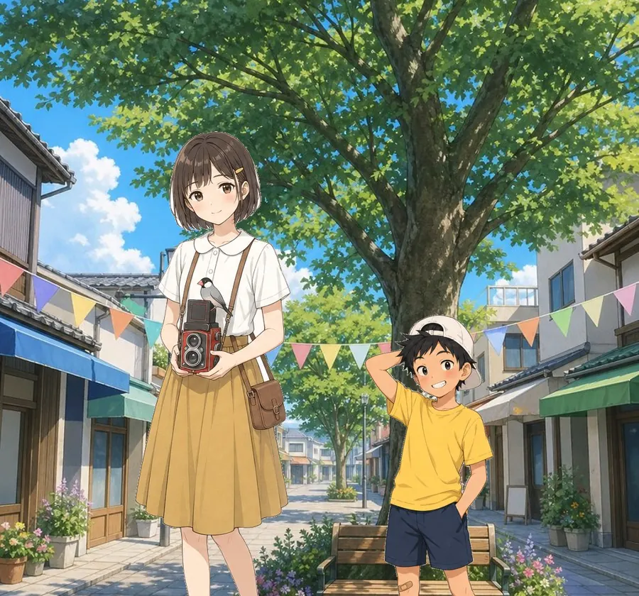
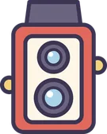
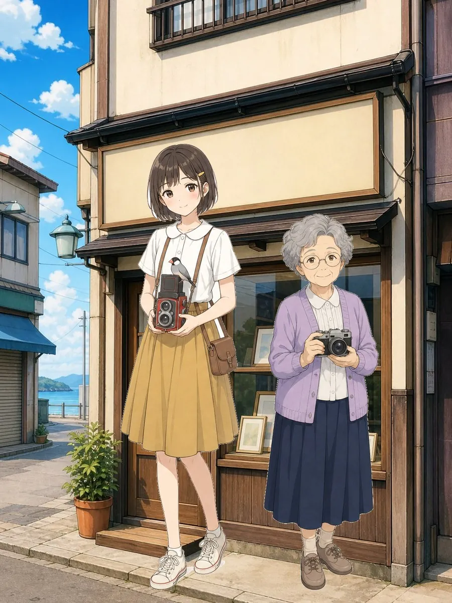
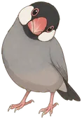
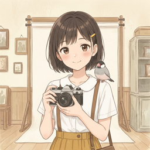
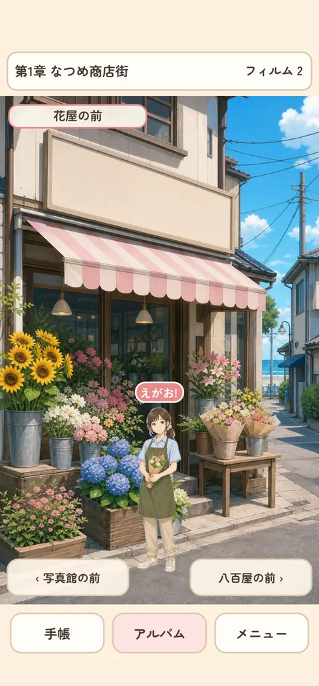
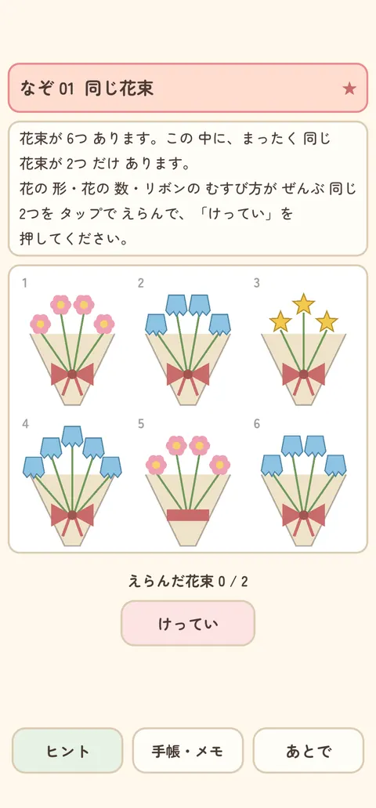
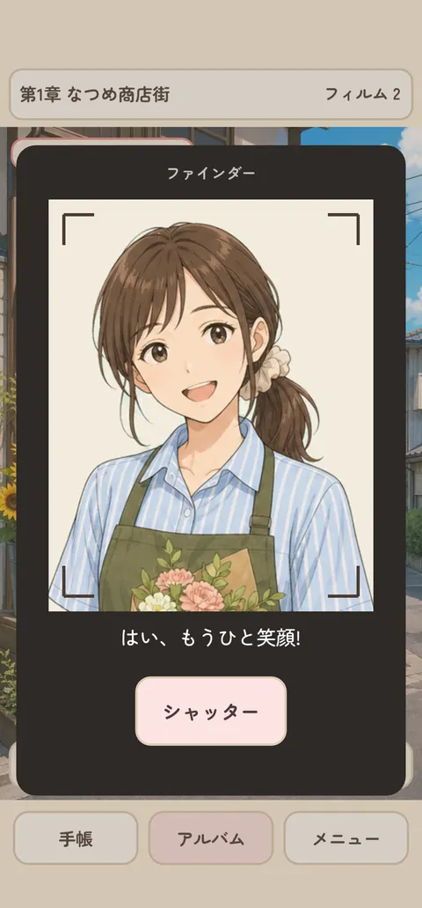
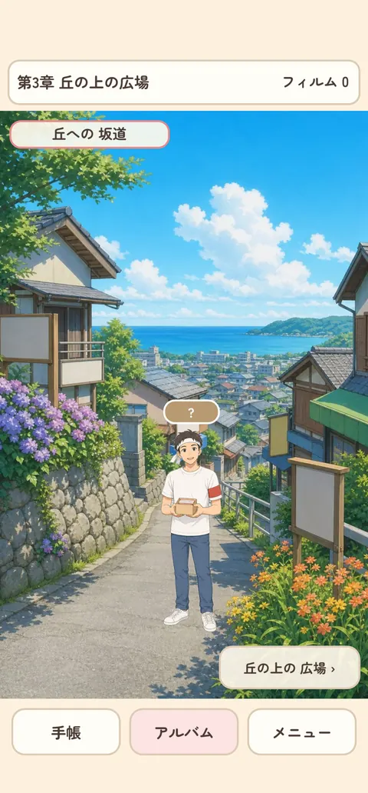
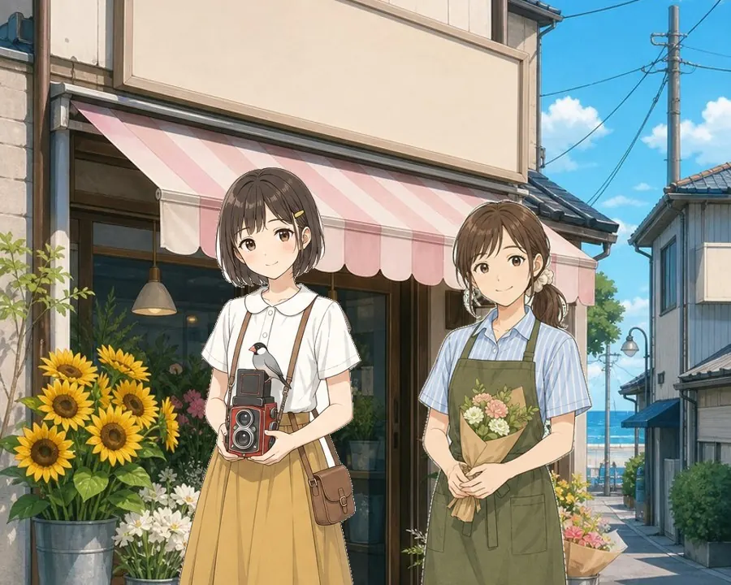

STORY
40年前の集合写真
写真館のかべには、40年前の夏祭りの集合写真。町のみんなが、笑顔でならんでいます。
今年も同じ場所で、みんなを撮りたい。人見知りの みのはは、文鳥の ぶーちゃんといっしょに、町の人に話しかけます。
困りごとを解くたびに、町の人の笑顔の写真が1枚ずつ。そして、町の人どうしの つながりも少しずつ見えてきます。




無料の謎解きゲーム

夏休み、写真館を手伝う みのは。夏祭りに、町のみんなの集合写真を撮りたい。でも町の人は、それぞれ困りごとをかかえていて……。1問ずつ解いて、アルバムを笑顔でいっぱいにしよう。
近日配信 iPhoneSTORY
写真館のかべには、40年前の夏祭りの集合写真。町のみんなが、笑顔でならんでいます。
今年も同じ場所で、みんなを撮りたい。人見知りの みのはは、文鳥の ぶーちゃんといっしょに、町の人に話しかけます。
困りごとを解くたびに、町の人の笑顔の写真が1枚ずつ。そして、町の人どうしの つながりも少しずつ見えてきます。





POINT
計算、言葉、図形、論理。いろいろな謎を、町の人とのお話といっしょに。
HOW TO PLAY
はじめての脱出ゲームでも、すぐに遊べます。
HINT & PRICE
遊ぶ前に知っておきたいことを、正直に書いておきます。
Q&A
ほかに困ったことはサポートへどうぞ。
はい。本編は全部無料で最後まで遊べます。広告なし+ヒント見放題(300円)は、買わなくても遊べます。
3章で21問です。1問は数十秒から数分くらいです(謎による)。進み具合は自動でセーブされます。
第1章はやさしめで、章ごとに少しずつむずかしくなります。困ったときは3段階のヒントがあり、3つめはほぼ答えです。
ありません。明るい町のお話です。
何度でも答えられます。こまったときは、ヒントを3段階で見られます。
いまは iPhone 版だけです(iOS 15 以上)。
SERIES
脱出ゲーム・謎解きゲームは、1作ごとに主人公もお話も別々です。どこからでもどうぞ。

みのはと ぶーちゃんといっしょに、町の笑顔をあつめてください。
近日配信 iPhoneこのゲームの
"Easy Lemon (30 second)", "Sunshine", "Pleasant Porridge", "Light Sting" Kevin MacLeod (incompetech.com)
Licensed under Creative Commons: By Attribution 4.0
https://creativecommons.org/licenses/by/4.0/